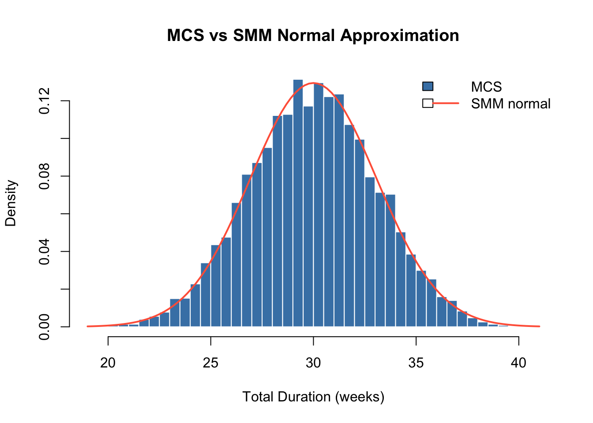
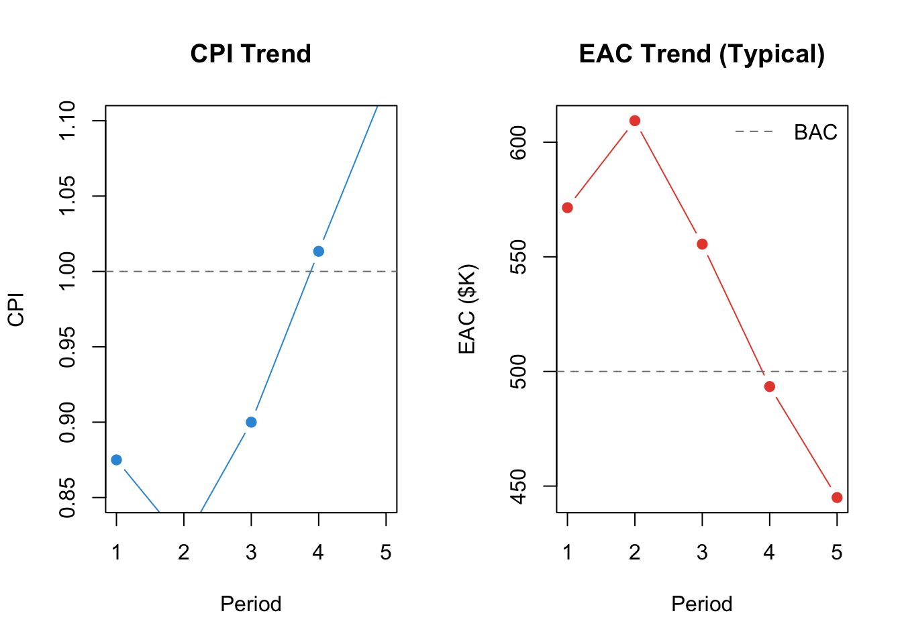
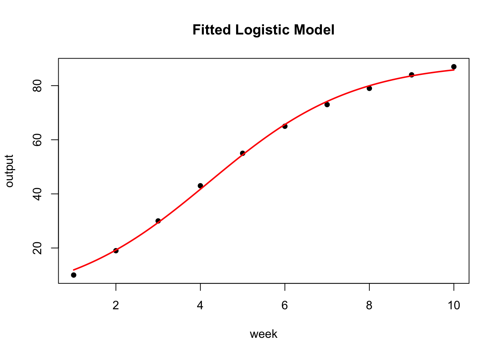

library(PRA)
set.seed(42)Appendix E — Exercise Solutions
Reference solutions for all ★-marked exercises. Computational solutions are fully evaluated. For conceptual exercises, the answers provided represent one reasonable interpretation; other defensible answers exist.
E.1 Monte Carlo Simulation (Chapter 2)
E.1.1 Exercise 3 ★: Correlation Experiment
Re-run the simulation with all off-diagonal values set to 0 (independent), then 0.9 (strongly correlated). How does total variance change?
task_distributions <- list(
list(type = "normal", mean = 10, sd = 2),
list(type = "triangular", a = 5, b = 10, c = 15),
list(type = "uniform", min = 8, max = 12)
)
cor_zero <- diag(3)
cor_high <- matrix(c(
1.0, 0.9, 0.9,
0.9, 1.0, 0.9,
0.9, 0.9, 1.0
), nrow = 3, byrow = TRUE)
res_indep <- mcs(10000, task_distributions, cor_zero)
res_corr <- mcs(10000, task_distributions, cor_high)
cat("Independent SD:", round(res_indep$total_sd, 2),
" P95:", round(quantile(res_indep$total_distribution, 0.95), 1), "\n")Independent SD: 3.1 P95: 35.1 cat("Correlated SD:", round(res_corr$total_sd, 2),
" P95:", round(quantile(res_corr$total_distribution, 0.95), 1), "\n")Correlated SD: 5.04 P95: 38.1 Interpretation. Total variance rises substantially under strong positive correlation. When tasks are independent, a long draw on Task A is just as likely to coincide with a short draw on Task B, and they tend to cancel out. When tasks are positively correlated, long draws tend to cluster: if Task A is late, Task B is probably also late. This eliminates the cancellation effect and inflates the total variance. The P95 rises correspondingly. Ignoring correlations understates the risk of the worst-case scenarios.
E.1.2 Exercise 5 ★: Real-World Application
Think of a project you know. Identify three tasks, estimate distributions, run mcs(), and report P50 and P80.
This exercise is open-ended by design; the answer depends on the project you choose. Below is one example: planning a small construction renovation (bathroom remodel).
reno_tasks <- list(
list(type = "triangular", a = 1, b = 2, c = 4), # Demo & prep
list(type = "normal", mean = 5, sd = 1.2), # Plumbing & tiling
list(type = "uniform", min = 1, max = 3) # Finishing & cleanup
)
reno_results <- mcs(10000, reno_tasks, diag(3))
cat("P50:", round(quantile(reno_results$total_distribution, 0.50), 1), "weeks\n")P50: 9.3 weekscat("P80:", round(quantile(reno_results$total_distribution, 0.80), 1), "weeks\n")P80: 10.6 weekscat("Contingency (P80 - P50):",
round(contingency(reno_results, phigh = 0.80, pbase = 0.50), 1), "weeks\n")Contingency (P80 - P50): 1.3 weeksGuidance. A good answer: (1) names specific tasks with real uncertainty, (2) justifies the distribution choice (triangular for three-point estimates, normal when you have historical data, uniform when you genuinely have no basis to prefer any duration), (3) interprets the contingency in practical terms rather than just reporting the number.
E.2 Sensitivity Analysis (Chapter 4)
E.2.1 Exercise 4 ★: Correlation Direction
Construct a correlation matrix where Task A and Task B are negatively correlated (−0.5). What happens to their sensitivity indices?
task_dists <- list(
TaskA = list(type = "normal", mean = 10, sd = 2),
TaskB = list(type = "triangular", a = 5, b = 10, c = 15),
TaskC = list(type = "uniform", min = 8, max = 12)
)
cor_neg <- matrix(c(
1.0, -0.5, 0.0,
-0.5, 1.0, 0.0,
0.0, 0.0, 1.0
), nrow = 3, byrow = TRUE)
sens_indep <- sensitivity(task_dists)
sens_neg <- sensitivity(task_dists, cor_mat = cor_neg)
round(rbind(independent = sens_indep, neg_correlated = sens_neg), 3) [,1] [,2] [,3]
independent 0.421 0.439 0.140
neg_correlated 0.362 0.392 0.246Interpretation. Negative correlation between Task A and Task B reduces both their sensitivity indices below the independent baseline. The covariance term \(\rho_{AB}\sigma_A\sigma_B\) is negative, so \(\partial\sigma^2_T/\partial\sigma^2_i\) decreases for both tasks. In practical terms: when Task A tends to be long, Task B tends to be short (and vice versa), so their uncertainties partially cancel in the total. This is the diversification principle applied to project schedules.
E.2.2 Exercise 5 ★: From Sensitivity to Contingency
Run mcs() and sensitivity() on the same tasks. Verify that the highest-sensitivity task also shows the widest spread in the simulation.
task_dists <- list(
TaskA = list(type = "normal", mean = 10, sd = 2),
TaskB = list(type = "triangular", a = 5, b = 10, c = 15),
TaskC = list(type = "uniform", min = 8, max = 12)
)
sens <- sensitivity(task_dists)
task_sds <- c(
TaskA = 2,
TaskB = sqrt((5^2 + 10^2 + 15^2 - 5*10 - 5*15 - 10*15) / 18),
TaskC = sqrt((12 - 8)^2 / 12)
)
cat("Per-task standard deviations (analytical):\n")Per-task standard deviations (analytical):print(round(task_sds, 3))TaskA TaskB TaskC
2.000 2.041 1.155 cat("\nSensitivity indices:\n")
Sensitivity indices:print(round(sens, 3))[1] 0.421 0.439 0.140Interpretation. Task B has both the highest sensitivity index and the highest standard deviation in the MCS output, telling a consistent story. The sensitivity index captures variance contribution (accounting for covariances), while the MCS SD measures spread directly. For independent tasks they rank identically. They can diverge when tasks are correlated: a low-variance task that is highly correlated with the dominant task can acquire a sensitivity index greater than its raw SD would suggest.
E.3 Second Moment Method (Chapter 3)
E.3.1 Exercise 3 ★: Normality Check
Run mcs() for the 3-task project and overlay the SMM normal distribution on the MCS histogram.
task_distributions <- list(
list(type = "normal", mean = 10, sd = 2),
list(type = "triangular", a = 5, b = 10, c = 15),
list(type = "uniform", min = 8, max = 12)
)
sim_result <- mcs(10000, task_distributions, diag(3))
means <- c(10, 10, 10)
vars <- c(4,
(5^2 + 10^2 + 15^2 - 5*10 - 5*15 - 10*15) / 18,
(12 - 8)^2 / 12)
smm_result <- smm(means, vars)
hist(sim_result$total_distribution, breaks = 60, freq = FALSE,
main = "MCS vs SMM Normal Approximation",
xlab = "Total Duration (weeks)", col = "steelblue", border = "white")
curve(dnorm(x, mean = smm_result$total_mean, sd = smm_result$total_std),
add = TRUE, col = "tomato", lwd = 2)
legend("topright", legend = c("MCS", "SMM normal"),
fill = c("steelblue", NA), lty = c(NA, 1),
col = c("steelblue", "tomato"), lwd = c(NA, 2), bty = "n")
Normality with exponential distributions. For exponential tasks, the normal approximation holds only moderately well for three tasks; the CLT needs more terms, or lighter tails. With \(n = 10\) exponential tasks the approximation is already quite good; with \(n = 3\) it will show excess right-skew. In that case, MCS gives the correct non-normal total.
E.3.2 Exercise 5 ★: When to Trust SMM
Write a decision rule for choosing between SMM and Monte Carlo.
Decision rule:
Use the SMM when: - You have \(\geq 6\) tasks and none dominates the others (variance contributions are roughly equal) - You need a quick result for a preliminary estimate or a stakeholder conversation - Tasks are approximately independent (no strong shared risks or resources) - You only need the mean, standard deviation, and a normal confidence interval, not the full shape of the distribution
Use Monte Carlo when: - One or two tasks have dramatically higher variance than the others (the CLT does not apply well, as the distribution is skewed or heavy-tailed) - Tasks are correlated (MCS handles the full correlation structure; SMM ignores it by default) - You need the full distribution, not just mean ± 1.96σ, for non-normal reporting or stakeholder communication - You need to compute contingency reserves at specific non-standard percentiles
The SMM is a fast screening tool. If it suggests a comfortable schedule, Monte Carlo may not add much. If it shows large variance, Monte Carlo is worth running to see whether the tail is well-behaved or alarming.
E.4 Earned Value Management (Chapter 5)
E.4.1 Exercise 5 ★: Recovering Project Trend
Create a 5-period dataset where the project starts over budget but recovers (CPI < 1 in periods 1–2, CPI ≥ 1 in periods 3–5). Plot the trend chart.
BAC <- 500000
schedule <- c(0.18, 0.38, 0.60, 0.82, 1.00)
pv_vals <- sapply(1:5, function(p) pv(BAC, schedule, p))
complete_vec <- c(0.14, 0.32, 0.54, 0.76, 1.00)
ev_vals <- sapply(complete_vec, function(c) ev(BAC, c))
costs <- c(80000, 195000, 300000, 375000, 445000)
ac_vals <- sapply(1:5, function(p) ac(costs, p))
cpi_vals <- ev_vals / ac_vals
eac_vals <- sapply(1:5, function(p)
eac(BAC, method = "typical", cpi = cpi_vals[p]))
par(mfrow = c(1, 2))
plot(1:5, cpi_vals, type = "b", pch = 19, col = "#3498db",
ylim = c(0.85, 1.1), xlab = "Period", ylab = "CPI",
main = "CPI Trend")
abline(h = 1, lty = 2, col = "gray50")
plot(1:5, eac_vals / 1000, type = "b", pch = 19, col = "#e74c3c",
xlab = "Period", ylab = "EAC ($K)",
main = "EAC Trend (Typical)")
abline(h = BAC / 1000, lty = 2, col = "gray50")
legend("topright", legend = "BAC", lty = 2, col = "gray50", bty = "n")
par(mfrow = c(1, 1))Interpretation. CPI climbs above 1.0 at period 3, meaning the project is now completing more work per dollar than it costs. The “typical” EAC responds immediately: as CPI improves, the denominator in \(EAC = AC + (BAC - EV)/CPI\) increases, pulling the forecast down toward BAC. The project is on track to finish close to budget.
E.5 Bayesian Risk Inference (Chapter 6)
E.5.1 Exercise 4 ★: Intuition Check
Explain why observing a root cause changes your belief about the risk event, even though you didn’t observe the risk event itself.
Answer. The key is the conditional probability \(P(\text{cause}|\text{risk occurs})\). If a root cause is much more likely to be observable when the risk is present than when it is absent, that is, if \(P(C|\text{risk}) \gg P(C|\neg\text{risk})\), then seeing the cause is genuine evidence that the risk has occurred or is likely to occur.
Consider an analogy: you see storm clouds (cause) and update your belief about whether it will rain (risk event). You haven’t observed rain yet, but clouds are more common before rain than during clear weather, so their presence raises your probability estimate. The risks_given_causes parameter captures exactly this: how likely is it that you would observe this cause if the risk were present? A high value (close to 1) means the cause is a strong indicator.
The mathematical mechanism is Bayes’ theorem: \(P(\text{risk}|\text{cause}) \propto P(\text{cause}|\text{risk}) \times P(\text{risk})\). The prior probability is multiplied by the likelihood ratio, and a likelihood ratio greater than 1 always increases the posterior.
E.5.2 Exercise 5 ★: Sequential Updating
Observe Cause 1, update. Then observe Cause 2, update again. Does order matter?
causes <- c(0.30, 0.20)
given <- c(0.80, 0.60)
not_given <- c(0.20, 0.40)
prior <- risk_prob(causes, given, not_given)
after_c1 <- risk_post_prob(causes, given, not_given, observed = c(1, NA))
after_both <- risk_post_prob(causes, given, not_given, observed = c(1, 1))
after_c2 <- risk_post_prob(causes, given, not_given, observed = c(NA, 1))
after_both_v2 <- risk_post_prob(causes, given, not_given, observed = c(1, 1))
cat("Prior risk: ", round(prior, 4), "\n")Prior risk: 0.6528 cat("After Cause 1 only: ", round(after_c1, 4), "\n")After Cause 1 only: 0.888 cat("After Cause 1 then Cause 2: ", round(after_both, 4), "\n")After Cause 1 then Cause 2: 0.92 cat("After Cause 2 only: ", round(after_c2, 4), "\n")After Cause 2 only: 0.752 cat("After Cause 2 then Cause 1: ", round(after_both_v2, 4), "\n")After Cause 2 then Cause 1: 0.92 Order doesn’t matter. The final posterior after observing both causes is identical regardless of the order of observation. This is a consequence of the independence assumption: in this model, causes are assumed independent of each other (conditional on the risk state). When causes are independent, the joint likelihood factors: \(P(C_1, C_2|\text{risk}) = P(C_1|\text{risk}) \times P(C_2|\text{risk})\), and multiplication commutes. If causes were dependent on each other, for example if observing one cause makes the other more likely, the model would need to account for that dependency and order could matter in sequential manual updates (though the final result should still be the same if done correctly via the joint distribution).
E.6 Sigmoidal Learning Curves (Chapter 7)
E.6.1 Exercise 3 ★: Confidence Band Width
Predict at weeks 3, 6, and 12. How wide is the 95% confidence band at each?
sig_data <- data.frame(
week = 1:10,
output = c(10, 19, 30, 43, 55, 65, 73, 79, 84, 87)
)
fit <- fit_sigmoidal(sig_data, "week", "output", "logistic")
for (w in c(3, 6, 12)) {
pred <- predict_sigmoidal(fit, w, "logistic")
cat(sprintf("Week %2d: predicted: %5.1f\n", w, pred$pred))
}Week 3: predicted: 29.4
Week 6: predicted: 65.7
Week 12: predicted: 87.8plot_sigmoidal(fit, sig_data, "week", "output", "logistic")
Explanation. Confidence band width increases with extrapolation distance for two reasons. First, the model is more certain about fitted values near the centre of the observed data (weeks 4–7, where the sigmoidal is most informative). Second, extrapolation beyond week 10 relies entirely on the assumed functional form; the model has no data to constrain the prediction, and small errors in the estimated parameters compound. As a rule: trust predictions within the observed range; treat extrapolations as scenarios, not forecasts.
E.6.2 Exercise 5 ★: Beyond Completion Percentages
Choose an alternative interpretation of the sigmoidal model (cost efficiency, defect rates, or productivity).
Productivity (units per week).
Suppose you are tracking the output rate of a concrete placement crew (cubic metres per week) as they build a bridge deck. Early in the project, the crew is learning the site and the equipment; productivity rises rapidly then levels off.
Setup: - x = week number (time) - y = cubic metres placed per week - K (ceiling) = the crew’s maximum sustainable output rate (estimated from similar past projects)
A fitted logistic model tells you: - The inflection point (\(t_0\)): the week when the crew is improving fastest; this is when you should schedule the most challenging pours - The growth rate (\(r\)): how quickly the crew learns; a high \(r\) means the learning curve is steep and full productivity is reached quickly - Extrapolation: predict the output rate at week \(n\) to inform the schedule for tasks that depend on a minimum pour rate
The model is useful here because productivity is bounded (even expert crews have a maximum throughput given equipment and site constraints) and the learning pattern is S-shaped: slow start, rapid improvement, plateau. The main caveat is that K must be estimated in advance; if the actual plateau differs, predictions in the upper portion of the curve will be biased.
E.7 Design Structure Matrices (Chapter 9)
E.7.1 Exercise 3 ★: Risk Propagation
Add Risk-3 (probability 0.40) affecting Resource-2 and Resource-3. Which task pair now shares a risk? Describe the worst-case scenario.
library(PRA)
nodes <- data.frame(
id = c("A", "B", "C", "D", "E", "F", "G", "H", "I"),
label = c("Risk-1", "Risk-2",
"Resource-1", "Resource-2", "Resource-3",
"Task-1", "Task-2", "Task-3", "Project"),
group = c("Risk", "Risk",
"Resource", "Resource", "Resource",
"Task", "Task", "Task", "Project"),
stringsAsFactors = FALSE
)
links <- data.frame(
source = c("A", "B", "C", "D", "E", "F", "G", "H"),
target = c("C", "D", "F", "G", "H", "I", "I", "I"),
value = rep(1, 8),
stringsAsFactors = FALSE
)
graph <- prob_net(nodes, links)
resource_ids <- graph$nodes$id[graph$nodes$group == "Resource"]
task_ids <- graph$nodes$id[graph$nodes$group == "Task"]
risk_ids <- graph$nodes$id[graph$nodes$group == "Risk"]
S <- graph$adjacency_matrix[resource_ids, task_ids]
rownames(S) <- graph$nodes$label[graph$nodes$group == "Resource"]
colnames(S) <- graph$nodes$label[graph$nodes$group == "Task"]
R <- graph$adjacency_matrix[risk_ids, resource_ids]
rownames(R) <- graph$nodes$label[graph$nodes$group == "Risk"]
colnames(R) <- graph$nodes$label[graph$nodes$group == "Resource"]
R2 <- rbind(R, "Risk-3" = c(0, 1, 1))
g2 <- grandparent_dsm(S, R2)
print(g2)Risk-based 'Grandparent' Design Structure Matrix
Tasks: 3 Resources: 3 Risks: 3
Task-1 Task-2 Task-3
Task-1 1 0 0
Task-2 0 2 1
Task-3 0 1 1Worst-case scenario. The off-diagonal entry G[Task-2, Task-3] (and its mirror) is now 1: Task-2 and Task-3 share one risk (Risk-3). The worst-case scenario: Risk-3 materialises and simultaneously escalates the Developer (Resource-2) and QA Engineer (Resource-3) costs. Both Task-2 and Task-3 are hit at the same time. The coupling means the project cannot recover one task while the other runs normally — both are delayed together. The Grandparent DSM entry of 1 quantifies exactly this: one shared risk exposure connects the pair.
E.7.2 Exercise 5 ★: From DSM to Monte Carlo
Use the extended S2 (with a shared Project Manager) to derive a correlation matrix for MCS. Compare total SD under zero and DSM-derived correlation.
S2 <- rbind(S, "Project Manager" = c(1, 1, 0))
p2 <- parent_dsm(S2)
P <- p2$matrix
d <- sqrt(diag(P))
cor_from_dsm <- P / outer(d, d)
diag(cor_from_dsm) <- 1
cat("DSM-derived correlation matrix:\n")DSM-derived correlation matrix:print(round(cor_from_dsm, 2)) Task-1 Task-2 Task-3
Task-1 1.0 0.5 0
Task-2 0.5 1.0 0
Task-3 0.0 0.0 1task_dists <- list(
"Task-1" = list(type = "normal", mean = 20250, sd = 5900),
"Task-2" = list(type = "normal", mean = 62000, sd = 16000),
"Task-3" = list(type = "normal", mean = 20000, sd = 4000)
)
set.seed(42)
res_zero <- mcs(10000, task_dists, diag(3))
res_dsm <- mcs(10000, task_dists, cor_from_dsm)
cat("SD (zero correlation): ", round(res_zero$total_sd, 0), "\n")SD (zero correlation): 17655 cat("SD (DSM correlation): ", round(res_dsm$total_sd, 0), "\n")SD (DSM correlation): 19961 cat("Variance inflation: ",
round((res_dsm$total_sd^2 - res_zero$total_sd^2) / res_zero$total_sd^2 * 100, 1),
"%\n")Variance inflation: 27.8 %What structural coupling adds. The base project (dedicated resources) yields cor_from_dsm == diag(3) — no coupling, no variance inflation. Adding the shared Project Manager introduces a non-zero correlation between Task-1 and Task-2, inflating total standard deviation above the independent baseline. DSM reveals which tasks are coupled; MCS quantifies how much that coupling increases risk.
E.8 Probabilistic Networks (Chapter 8)
E.8.1 Exercise 3 ★: Add a QA Risk
Add Risk-3 (p = 0.40) affecting QA Engineer, increasing cost from $20K to $35K.
nodes <- data.frame(
id = c("A", "B", "C_new", "C", "D", "E", "F", "G", "H", "I"),
label = c("Risk-1", "Risk-2", "Risk-3",
"Resource-1", "Resource-2", "Resource-3",
"Task-1", "Task-2", "Task-3", "Project"),
group = c("Risk","Risk","Risk","Resource","Resource","Resource",
"Task","Task","Task","Project"),
stringsAsFactors = FALSE
)
links <- data.frame(
source = c("A", "B", "C_new", "C", "D", "E", "F", "G", "H"),
target = c("C", "D", "E", "F", "G", "H", "I", "I", "I"),
value = rep(1, 9),
stringsAsFactors = FALSE
)
distributions <- list(
A = list(type = "discrete", values = c(1,0), probs = c(0.70, 0.30)),
B = list(type = "discrete", values = c(1,0), probs = c(0.60, 0.40)),
C_new = list(type = "discrete", values = c(1,0), probs = c(0.40, 0.60)),
C = list(type = "conditional", condition = "A",
true_dist = list(type = "normal", mean = 30000, sd = 8000),
false_dist = list(type = "normal", mean = 15000, sd = 3000)),
D = list(type = "conditional", condition = "B",
true_dist = list(type = "normal", mean = 80000, sd = 20000),
false_dist = list(type = "normal", mean = 50000, sd = 10000)),
E = list(type = "conditional", condition = "C_new",
true_dist = list(type = "normal", mean = 35000, sd = 7000),
false_dist = list(type = "normal", mean = 20000, sd = 4000)),
F = list(type = "aggregate", nodes = c("C")),
G = list(type = "aggregate", nodes = c("D")),
H = list(type = "aggregate", nodes = c("E")),
I = list(type = "aggregate", nodes = c("F", "G", "H"))
)
graph_new <- prob_net(nodes, links, distributions = distributions)
sim_new <- prob_net_sim(graph_new, num_samples = 10000)
cat("Mean total cost (with QA risk):", format(round(mean(sim_new$I)), big.mark=","), "\n")Mean total cost (with QA risk): 119,402 cat("Expected QA cost increase:",
format(round(mean(sim_new$H) - 20000), big.mark=","), "\n")Expected QA cost increase: 5,777 Interpretation. The expected project cost rises by the probability-weighted cost increase for the QA Engineer: \(0.40 \times (35{,}000 - 20{,}000) = \$6{,}000\). The actual simulated increase will be close to this but not exact due to the variance in the conditional distributions.
E.8.2 Exercise 5 ★: Two Risks, One Resource
Design a network where two risks both affect the same resource. What happens to task correlation?
A single conditional node can only key off one condition node, so “two risks both affect the same resource” is expressed as two risk-driven cost components (Res1 for R1’s effect, Res2 for R2’s effect) that are summed into the shared resource node Res:
nodes2 <- data.frame(
id = c("R1", "R2", "Res1", "Res2", "Res", "T1", "T2", "P"),
label = c("Risk-1", "Risk-2", "Resource Cost (R1 effect)", "Resource Cost (R2 effect)",
"Shared Resource", "Task-1", "Task-2", "Project"),
group = c("Risk","Risk","Resource","Resource","Resource","Task","Task","Project"),
stringsAsFactors = FALSE
)
links2 <- data.frame(
source = c("R1","R2","Res1","Res2","Res","Res","T1","T2"),
target = c("Res1","Res2","Res","Res","T1","T2","P","P"),
value = rep(1, 8),
stringsAsFactors = FALSE
)
distributions2 <- list(
R1 = list(type = "discrete", values = c(1,0), probs = c(0.50, 0.50)),
R2 = list(type = "discrete", values = c(1,0), probs = c(0.40, 0.60)),
Res1 = list(type = "conditional", condition = "R1",
true_dist = list(type = "normal", mean = 50000, sd = 10000),
false_dist = list(type = "normal", mean = 25000, sd = 5000)),
Res2 = list(type = "conditional", condition = "R2",
true_dist = list(type = "normal", mean = 30000, sd = 8000),
false_dist = list(type = "normal", mean = 15000, sd = 3000)),
Res = list(type = "aggregate", nodes = c("Res1", "Res2")),
T1 = list(type = "aggregate", nodes = c("Res")),
T2 = list(type = "aggregate", nodes = c("Res")),
P = list(type = "aggregate", nodes = c("T1", "T2"))
)Note: in this simplified network both tasks draw from the same resource node, and that resource’s cost responds to both risks. Because T1 and T2 both equal Res, their simulated values will be perfectly correlated (correlation = 1). In a more realistic model, each task would have additional independent cost components, reducing the correlation below 1.
graph2 <- prob_net(nodes2, links2, distributions = distributions2)
sim2 <- prob_net_sim(graph2, num_samples = 10000)
cat("Correlation between T1 and T2:", round(cor(sim2$T1, sim2$T2), 3), "\n")Correlation between T1 and T2: 1 Interpretation. Two tasks that both depend on the same resource share all of that resource’s uncertainty. When a risk strikes the shared resource, both tasks are affected simultaneously and in the same direction, creating perfect positive correlation within the resource node. This is exactly what the DSM predicts structurally (Chapter 9): a high off-diagonal Parent DSM entry between these two tasks.
E.9 Portfolio Networks (Chapter 10)
E.9.1 Exercise 4 ★: Add a Fourth Project
This exercise requires reading ch-network2.qmd to obtain the existing three-project network structure. The solution below shows the pattern for extending the portfolio.
# Pattern for adding a fourth project (Bridge Inspection) to the portfolio
# Assumes nodes A, B, C are enterprise risks already in the network
# New nodes: L4 (Labor-4), M4 (Materials-4), E4 (Equipment-4),
# W4 (Work-4), X (Portfolio total)
# Add to nodes data frame:
new_nodes <- data.frame(
id = c("L4", "M4", "E4", "W4"),
label = c("Labor-4","Materials-4","Equipment-4","Bridge Inspection"),
group = c("Resource","Resource","Resource","Project"),
stringsAsFactors = FALSE
)
# Add edges: enterprise risks → new resources, new resources → W4, W4 → portfolio
new_links <- data.frame(
source = c("A","B","C","L4","M4","E4","W4"),
target = c("L4","M4","E4","W4","W4","W4","Y"),
value = rep(1,7),
stringsAsFactors = FALSE
)Expected result. Adding a fourth project sharing the same enterprise risks increases total portfolio variance by more than the fourth project’s standalone variance, since the covariance terms between the new project and the existing three add to the total. The risk importance ranking is unlikely to shift dramatically, but any enterprise risk that was already dominant (highest contribution to existing portfolio variance) will become even more dominant in the extended portfolio.
E.9.2 Exercise 5 ★: Causal Graph Design
Add SC → C edge: Supply Chain Disruption also affects Weather Delay through logistics.
This exercise is primarily conceptual; the answer requires reasoning about the see-versus-do distinction.
Answer. Adding SC → C means that C (Weather Delay) is no longer a root variable; it becomes conditional on SC. When you see C = Yes, you’re now also updating your belief about SC, which in turn shifts your beliefs about A (Labor Shortage) and B (Material Price Spike), because all three share SC as a parent. This creates explaining away: if you observe C and you know that SC explains it, you become less certain that some independent weather phenomenon caused C.
The do-calculus implication: prob_net_update() (graph surgery) would remove the SC → C edge when computing \(P(Y | \text{do}(C = \text{No}))\), preventing the intervention from propagating back up to SC and then down to A and B. In contrast, prob_net_learn() (conditioning) would propagate through all paths, including the SC back-channel. The see-versus-do distinction becomes consequential precisely because of this shared upstream cause.